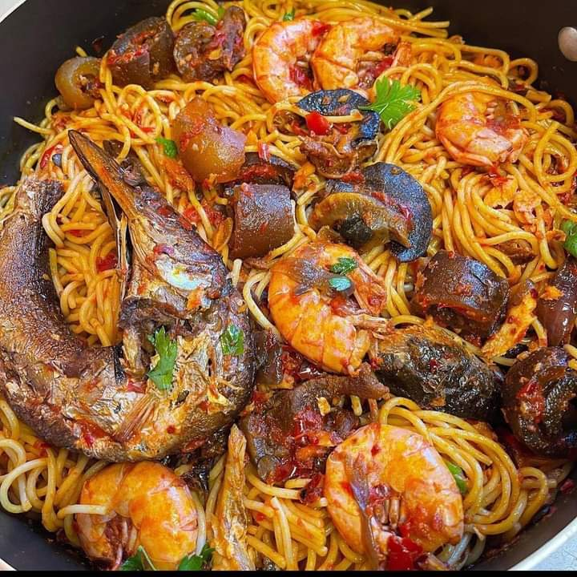

Description
Wash your protein thoroughly with salt and water
boil with salt and seasoning allow to
cook till tender
Remove the root of your fresh pepper,
tomato,and tatashe
pill the body of the onion,rinse and grind all together till it is a bit smooth
Ingredient
- Pasta
- Mixed pepper(Fresh pepper,fresh tomato,tatashe)
- Onion
- Groundnut oil
- Seasoning
- Maggi
- Salt
- Proteins(optional)
- Water
Steps:
- Parboil the pasta with salt,water and little oil to avoid guming together,sift and set aside
- Add groundnut oil inside a non-stick pan,allow to get hot a little
- Add little onion,mixed pepper,maggi,seasoning,salt to taste and allow to fry
- After frying for about 15 to 20 minutes,add in your protein if necessary then add in your parboiled
pasta
and mixed thoroughly